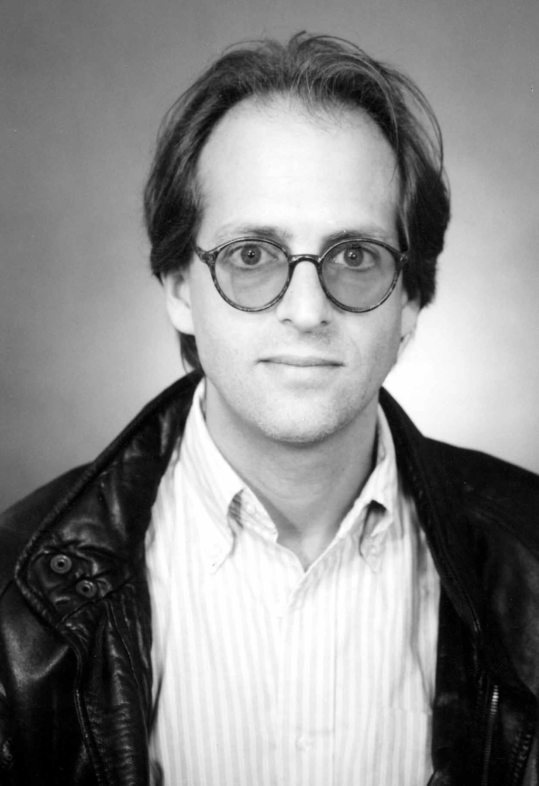
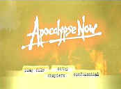
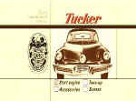
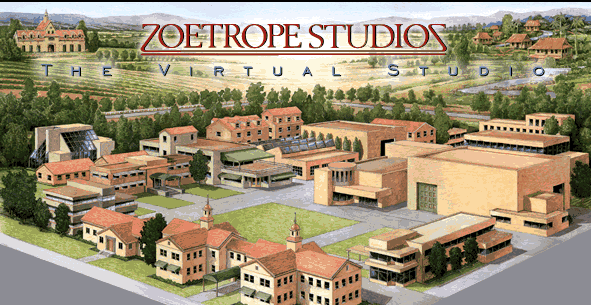
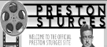

Kim Aubry: Transferring Zoetrope's Vision Interview by Stu Kobak
A pocket of inspired
moviemakers thrive in the shadow of the giant sequoias. Cherishing independence, these Northern
Californians are infused with determined artistic vision. Zoetrope Studios, like the great
trees, aspires to great heights. With the blossoming of DVD, Zoetrope has now incorporated DVD
production into the vertical filmmaking process. Kim Aubry is part of the team that helps realize
the vision of Francis Ford Coppola at his mini movie studio. 
Job description doesn't always define the scope
of a man's work and in a free spirited environment like Zoetrope, Aubry looks to the big picture
for inspiration. Post production may be his domain, but he considers his Zoetrope mandate to
preserve the independence of the filmmaker. How can he do that? "Innovative use of technology
and people in post production; bridging the gaps between different phases of filmmaking,"
observes Aubry. Making the journey from idea to film or DVD as seamless a process as possible is a
prime objective for Aubry. " For example, we built this DVD
Lab at Zoetrope largely because we felt that the early DVDs we were seeing were fundamentally not
taking advantage of all that the new medium offers. An example: Coppola is as concerned about the
quality of projection in the cinema as he is about the script, shooting and sound mix. In the same
way, we feel that the PRESENTATION of the film for home video viewers; the packaging of the disk,
the supplemental materials, even the choice of typeface for the on-screen menus is a critical
creative decision that has an impact on the viewer's 'experience.' How many wonderfully written,
photographed and directed films have been marred in the viewers eyes by lousy
projection or poor sound in the theater? By creating our own in-house facility for designing DVDs,
we can control the look and make sure that the intent of the filmmaker is respected in the
'presentation' on DVD."
"The great thing about my job has been the autonomy and independence
to explore areas that are of interest to me, and...when I am successful, these areas for
exploration and experimentation benefit the filmmaker and filmmaking process by opening up new
avenues for creativity and sometimes, creative collaboration," enthuses Aubry. Working for
Zoetrope presented a unique opportunity for finding an artistic pathway to realizing the artistic
potential of film. "Coppola and his company have always chosen the road less traveled in terms
of scope and method. In the 1970s and early 80s, Zoetrope was making feature films using
technologies and practices unheard of in the film industry. Just being located 450 miles away in
Northern California was unusual, a choice made by Coppola and his colleagues (like Carroll Ballard,
George Lucas, Walter Murch and Philip Kaufman) made in the early 1970s."
Aubry's Zoetrope experience has included a broad range of work, including
work on specific films outside his purview as Technical Director. His experience was very different
on the three films he has worked. "One was a film we never made, Francis
Coppola's The Adventures of Pinocchio. It was to have a computer generated human operated
photo-realistic puppet living in a live action universe with human actors. Bram Stoker's Dracula
was a fascinating project moving from pre-production through shooting and post...many technological
firsts on a film that had a distinctively low-tech look and character. Finally, the revised edition
of Apocalypse Now (scheduled for home video release sometime in 2001) has been a fascinating
and very complex project."
Talking DVD
 |
|
Apocalypse Now DVD Menu ©Paramount |
Talking DVD in general with Aubry and specifically
about some Coppola films sparked some passionate responses. While Aubry expressed a desire to raise
the level of the home theater experience, he does think there is a danger of losing sight of
what is most important. "There is so much pseudo-expertise out there; I think some of the
magazines and on-line sites have created a strange sub-culture of obsessive fanatics who don't
watch movies but compare specifications and statistics...sort of like the people who keep score at
the ball game and have their heads buried in their score cards instead of watching the infield. We
aim to raise the bar in terms of zealously preserving high standards for film image transfer and
sound transfer but doing this in context of the original. And we hope to provide DVD user interface
design and DVD 'extra materials' that are beautiful, useful, and never gratuitous. In the
process, we hope to educate people who appreciate film, both about the films themselves and
also about the medium. For example, there has been so much un-informed second guessing about the
video aspect ratio of our recent Widescreen DVD releases. I have been trying to contact the
reviewers one by one with corrections and some background information on exactly how and why we
have chosen to transfer these films that were originally photographed 2.35:1 into 2:1."
Aubry has his own pet peeves about DVD: "FBI warnings, THX and studio logos, mandatory
trailers, inconsistent terminology. Deceptive characteristics. Fake stereo in mono movies. Fake 5.1
stereo from films that were ONLY mixed for 4-channel Dolby stereo. Ugly gratuitous animated main
menus that make you wait to push a button."
An ongoing controversy of framing has
surrounded Apocalypse Now
since its first widescreen high end video release on laser disc. On the recent Tucker release, I noted that several
scenes seemed rather cramped at the 2.0 aspect ratio at which the DVD was presented. Aubry tried to
explain the decision making process at Zoetrope. "Vittorio Storaro, the cinematographer of Tucker,
as well as Apocalypse Now, One From the Heart, The Conformist, 1900,
and The Last Emperor personally supervised the Tucker transfer and took great care (and
pleasure) in figuring out the best way to re-compose his original composition for television. The
second guessing that goes on is understandable: for years, studio and broadcasters made horrid
choices in panning, scanning and cropping. But the problem they were trying to solve is very real:
for people with conventional televisions, there are only 486 active scanning lines in the vertical
axis. A "politically correct" transfer of a 2.35:1 film would essentially utilize only
276 of these scanning lines resulting in the loss of a great deal of detail. 'Widescreen' DVDs go a
long way toward solving this by rescaling the 2.35:1 image to fit onto a virtual 4:3 raster, but
for people with conventional 4:3 displays, they will see a re-scaled DVD image of 276 lines.
Storaro has decided that a compromise framing of 2.0:1 is a better choice for home video. A
little cropping of the sides in exchange for greater vertical resolution and a better presentation
on a 4:3 display. Besides this basic re-framing, he subjectively determines, on a scene-by scene
basis the best way to deal with scenes that require dynamic resizing ('Panning and Scanning Lite').
For me, this is logical...the original framing of the film is no more 'sacred' ....given the
context of people watching this movie on VHS or DVD on a 9" screen instead of a 50 foot screen
in the cinema...no more sacred than the notion of video compression. Our compressionist carefully,
artfully and, we hope, invisibly manages the bit rate and other factors so that the film survives
translation into this different medium intact." Aubry's experience as a union trained
projectionist in the 1970s adds another perspective to the aspect ratio issue: "It might
interest you to know that in movie theaters, there is a tremendous inconsistency in the accuracy of
the framing and sizing of film images on the screen. Projection lenses are made in focal length
increments of 1/4" (this makes a huge difference in projected image size at typical screen
throws of 60 -100 feet); furthermore, architects tend to size theater screens without considering
the available projection optics. I can assure you that if you travel from screen to screen with
some test film, you will see variations in sizing and cropping approaching 15% among the best
commercial cinemas. So I have always found it amusing that Home Video reviewers discussing
laser disks and DVD complain about transfers where 2% or 3% of the picture width is apparently
cropped."
Aspect ratio is a subject you could go back and forth on ad nauseam. Ultimately,
you have to grant the artistic talent that made the film prime authority in making choices when it
moves from one display venue to another. Of course, it doesn't mean you have to be happy.
Not surprisingly, film preservation is an area of concern to
Zoetrope. "We have many deteriorating negatives that we are concerned with. We frequently
enlist the studios' help in paying for preservation elements. Working on a new version of
Apocalypse Now (the negative is ONLY 23 years old) has shown us that these precious images are
not "indelible" and we are taking steps to ensure that humanity will be able to make high
quality 35 mm prints in perpetuity. Digital archival systems are of great interest but are fraught
with problems and concerns. Although the digital sample may be of adequate resolution and
colorimetry to capture all readable data on the film record, (we are approaching that capability
today with film scanners) I cannot think of a digital medium, form factor, or recording method that
I know will be in use in just five years. So there are some advantages to having stable analog
optical records. Eventually, the problem of digital archiving and maintenance will be resolved but
there are too many questions at the moment to cause us to commit to a system or
standard."
The Home Picture
Dedication to work doesn't stop Aubry from
being a family man. Watching films with his family is part of the Aubry routine. I wondered what
his personal home theater is like. "Funny you should ask. I would say at the low end of
mediocre....busman's holiday and so forth. I spend so much time working with our engineers to
calibrate our screening rooms and mixing studios, and then stress out about the imperfections and
inconsistencies going from mastering room to competitor's studio to the actual cinema where we may
be previewing our films, that I have decided that at home, the idea is to keep things in
perspective: keep it simple and don't worry. The system consisted of a 10 year old Onkyo A/V
receiver (no digital audio decoding, but it was one of the few amps of the era that had equally
sized 100 watts/channel power amps for Left Center and Right, Polk 10s for L, C and R,
Minimus speakers for Surrounds (yup, Radio Shack!) and a Velodyne subwoofer, and a 10-year old
Panasonic 27" TV that is slowly dying. In fact, we have been in the midst of a remodeling
project in our home and this project has caused us to box up our 600 LPs, countless CDs, forty or
fifty laser disks and dozens of kid's VHS tapes and live without television or music for several
months. It has been great. But as a result of the remodel, I decided that I was sick and tired of
looking at racks of ugly Japanese electronics chassis in the living room, so I just created a small
closet specifically to house all the gear, and I just finished re-wiring the system with IR
repeaters so now all one sees is the TV screen...some day to be replaced with a front projector
(probably DLP) or, if they ever get them good enough and cheap enough, a flat plasma display."
Some recent DVD choices for Aubry home fare have been Rushmore, The Third Man, Toy Story.
His tastes in films range far and wide. Favorite directors include Preston Sturges, Coppola,
Michael Powell, Welles, Jonathan Demme, Kurosawa, Stanley Donen, Chaplin, Hitchcock, Agnieszka
Holland, Spike Lee, Eisenstein, Christopher Guest, Martin Scorcese. Families with a ten year old
boy and a girl approaching seven frequently find themselves watching some of the kids' choices.
Recent youngster's favorites include The Iron Giant, My Neighbor Totorro (Japanese
animation), Annie
Get Your Gun, some inspired irreverence with Beetlejuice. The Aubrys try to get out
to the movies once a week, but the variety of home viewing took a hit "We used to have a
wonderful resource which was a laser disk/DVD rental store near our home owned by film buffs. The 3
fellows who owned the store just shut their doors after 8 years...but funnily enough, they are now
in DVD distribution; they have a small company called Fantoma and we even do their compression and authoring work."
DVD Production at Zoetrope
 |
|
Tucker DVD Menu©Paramount |
"We are not unique, but we are highly
motivated perfectionists who aim to have the best possible looking and sounding transfer and
encode," enthuses Aubry. " The compressor we use right now is made by Panasonic and we
think it makes MPEG look fantastic compared to some of the other hardware that is out there in
common use. We are extremely conservative when it comes to digital noise reduction. Other DVD
facilities dial in varying amounts of NR to reduce the needed bit rate or total DVD size, but we
try to err on the side of leaving the film as natural as as possible, preserving original
characteristic grain structure, and we avoid that 'digital' TV look."
While Zoetrope's Technical Director has obvious pride in the DVDs the
company is producing, he was reluctant to respond to some scene specific questions I posed about Tucker:
"I can't comment on specific frames. I think the work speaks for itself. I didn't see any
gross defects...not that they don't exist but I personally have screened our encode several times
and nothing jumped out at me that wasn't eventually repaired. The process of transferring 24
frame-per-second photographic film images into a compressed bit stream that can be viewed on an
electronic 30 frame per second interlaced display is not perfect. I have noticed that sometimes,
High Definition transfers exhibit new kinds of digital artifacts that we hadn't seen
before...perhaps what is really happening is that as our expectations increase, so do our
sensitivities to subtle aberrations. Let me recount a story: a few years ago a colleague...a young
filmmaker... asked me to check out a scene from a classic film that is full of film optical
effects. He pointed out a poorly made traveling matte in a transition between scenes...of course,
he was playing it frame by frame on a VHS, and he acted shocked that a great filmmaker would allow
this imperfection in a masterpiece. I reminded him that in proper context....people would see the
film projected at 24 frames per second and the slight-of-hand that is cinema works perfectly; it
was a very effective transition and never intended to be scrutinized under the magnifying glass one
frame at a time. Seurat's pointillist paintings don't look so great at close range, either."
Working to minimize any DVD defects means stringent attention to quality control
as outlined by Aubry "After the first pass at encoding a feature, our DVD compressionist sends
Digital videotapes down to a a company in Hollywood that specializes in providing "third
party" objective technical review of the material...sort of like an outside auditing company.
These people are paid by the releasing studio, and it is part of our contract that we must satisfy
them with our encoding quality and our DVD authoring. They email us back time codes and comments
and we take a second pass at fixing areas they may have flagged. For us, using an outside company
to review our work is a vital step...our own people though very skillful and dedicated, cannot
catch every artifact, digital hit or dirt problem. Eventually, we send down authored material on
hard drives to enable the releasing studio and the 3rd party QC company to "emulate" the
title. Finally, when all navigational bugs and other defects revealed in emulation are resolved, we
make a glass master and a set of check disks which yet another third party tester uses to
test in a matrix of DVD players. Believe it or not, there are certain makes, models, and firmware
revisions in consumer DVD players that do not conform 100% to the DVD specification which means
that some players act strangely with specific navigational or DVD programming differences.
Sometimes, we have to spend days trying to figure out some subtle issue in our code that has to be
patched so that a 1998 model X from manufacturer Y will be able to play our disk. Strange."
I broached a pet peeve of mine with
Aubry, monitor size used in transfer of film to video and in compression as well. With home
theater screens growing in size transfer flaws or compression artifacts are more likely to intrude.
Projection sized images in transfer bays would make it easier to see irksome potential transfer and
mastering details. Aubry responded "Many of our best film-to-tape transfers were supervised by
Cinematographer Vittorio Storaro working at a Hollywood facility called Post Logic with Storaro's
chosen colorist* Lou Levinson. I believe that the HD monitor they currently use in the HD transfer
bay is 20" and it is viewed at fairly close range. I have been in some mastering facilities
that have installed DLP or other digital projectors to make it possible to do color correction for
"digital cinema" presentation. Perhaps this will eventually become the norm. But in
defense of smaller CRT displays, I think it is fair to say that the smaller monitor may be an
appropriate contextual device for transfers that will end up on smaller phosphor screens which are
still the great majority of displays out there. If you are saying that you are seeing too
much dirt and other imperfections on your large screen display at your home, you may make a good
case for larger screen monitoring in transfer, although...have you been to a cinema lately? Dirt
and dust are an unfortunate part of the original medium, sad to say."
Thus far, the Zoetrope team has done an outstanding
job of delivering the goods on their DVD releases. Kim Aubry strikes me as the kind of guy that
will work toward making everything at Zoetrope as good as it can be. Next up from Paramount
through Zoetrope is The Conversation, featuring audio commentary from director Coppola and
sound editor Walter Murch. "Everybody wants to know everything about The Godfather. We hear
that the three Godfather films are likely on the 2001 schedule at Paramount. We think that is a
great development and preliminary creative meetings are just starting to discuss content, technical
details, etc. And stay tuned for The Conversation DVD and also The Virgin Suicides
DVD. Both look terrific."
Special thanks to Martin Blythe of Paramount Home Video for making this interview possible.
*telecine operator


Apocalypse Now is
Coppola's distorted vision of war now on DVD in gorgeous anamorphic images.

Tucker: The Man and His Dream is beautifully filmed with loving
attention to detail.

Selections from the feature archive include articles on Akira
Kurosawa, Frank Darabont, Blonde Bimbos,
Hollywood Street Gangs, or Vietnam: The
Hollywood Pariah, and many more....

During World War II, Hollywood pumped out war movies one after the other. Vietnam was was another
story. As far as Hollywood was concerned it was a pariah.


The home of Francis Ford Coppola's Zoetrope
Studios has more corridors of interest than you might expect.

The National Film Preservation Foundation (NFPF) is the nonprofit organization created by the U.S. Congress to save
America's film heritage.

DVDPlanet is the DVD
incarnation of legendary laser retailer Ken Crane's. Deep discounts and serious service.
Direct from the corridors of the Home Theater Forum, Home Theater Talk is the newest place on the Net to discuss everything home theater. Friendly atmosphere and knowledgeable folks are the secret ingredients.
DVD News, Reviews, Previews, Easter Eggs and more.

The official site for information about the great comic director. A treat for connoisseurs of
classic Hollywood madcap.
 Brad Lang continues to add more interesting material to the extensive
collection at Classic
Movies. Everything from actors and actress to your favorite directors is
linked at the site.
Brad Lang continues to add more interesting material to the extensive
collection at Classic
Movies. Everything from actors and actress to your favorite directors is
linked at the site.
Looking for information about widescreen movies and hardware. The Widescreen Movie Center
is the place to go.
ETEKNet is the web's only 24-hour, totally FREE source for all your home theater, DVD, Dreamcast, PC, and Networking tech support needs!
DVD
Demystified makes it all clear.The official Internet DVD FAQ for the rec.video.dvd
Usenet newsgroups.
 Gary Morris's insightful publication Bright Lights
Film Journal turns the celluloid in films from a unique perspective. Click on the image above
for more pure movie views.
Gary Morris's insightful publication Bright Lights
Film Journal turns the celluloid in films from a unique perspective. Click on the image above
for more pure movie views.

News, information, features about current films in theaters and in the
pipeline. Easy to use interface.

The Movie Poster Archive includes extensive poster images from the films of stars like Susan Hayward, Kirk Douglas, Katharine Hepburn and many more. Our featured star is Tyrone Power.

Click on the DVD MIA symbol for
profiles of DVDs missing in action.
Add films to the DVD MIA Master List by filling out
a simple form. Click Here
Need a daily fix of movie quotes. Reel Quotes Newsletter has the answer. Click on the Reel Quotes symbol for more.